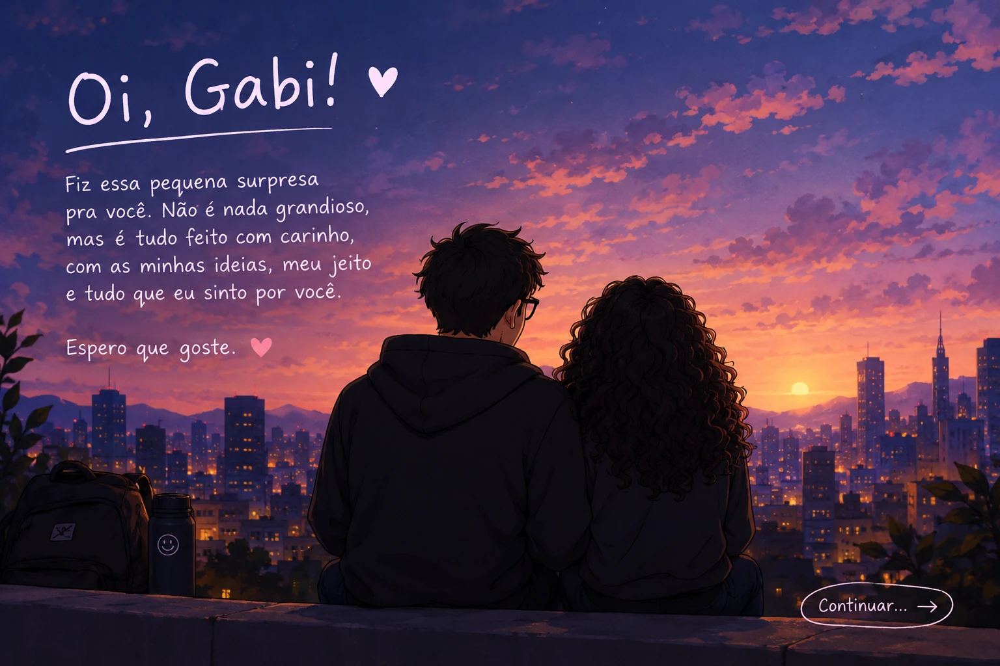

O começo

Uma surpresa feita com carinho
Oi, Gabi! ♡

Ao navegar, o site tenta tocar a trilha da página — inclusive a mensagem final. O navegador pode exigir um toque em reproduzir. ♡
Se estiver no celular, vire-o na horizontal para ver os desenhos e ler as páginas maiores.